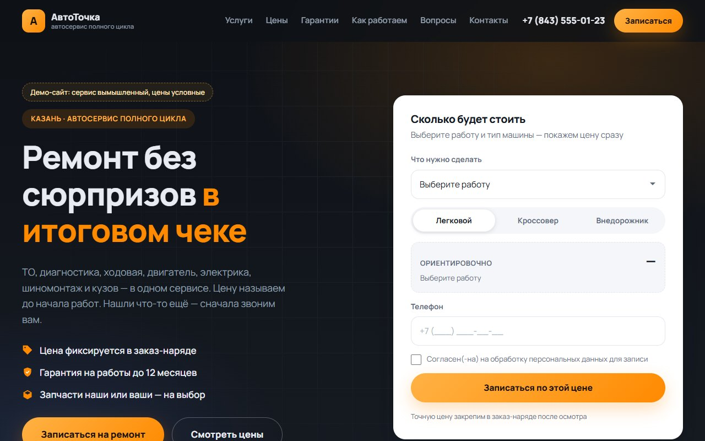

Лендинг автосервиса
Одностраничник на 11 блоков: оффер с квиз-формой расчёта, услуги с ценами, этапы работы, кейсы «было — стало», отзывы, FAQ. Маска телефона, проверка полей, модальное окно записи, анимация появления блоков.
Смотреть сайт →